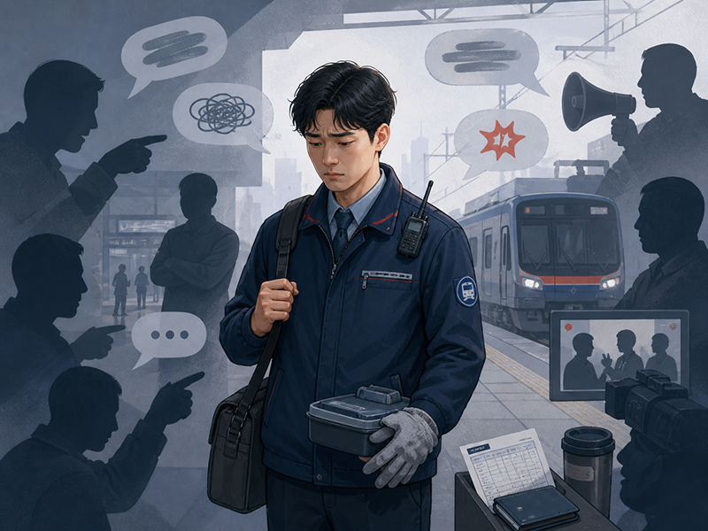
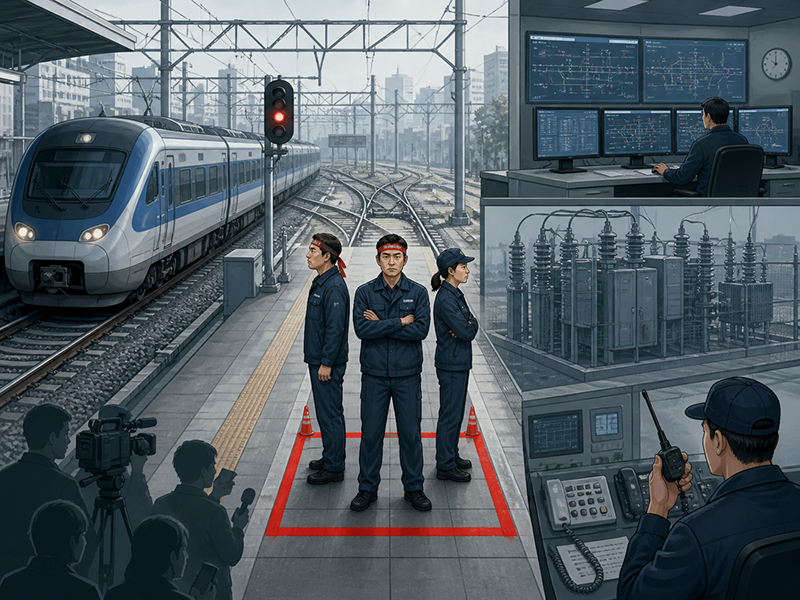
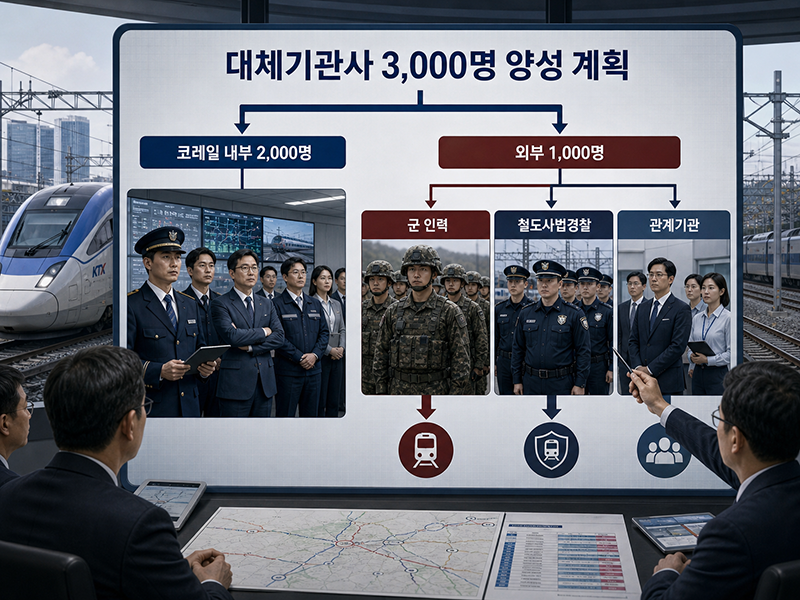
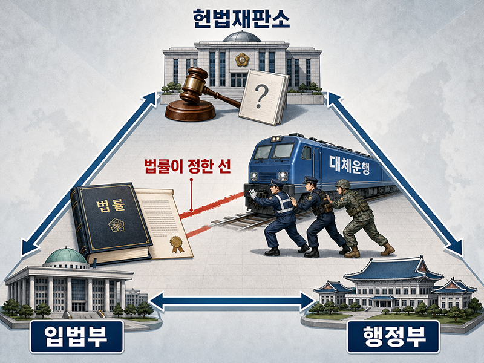
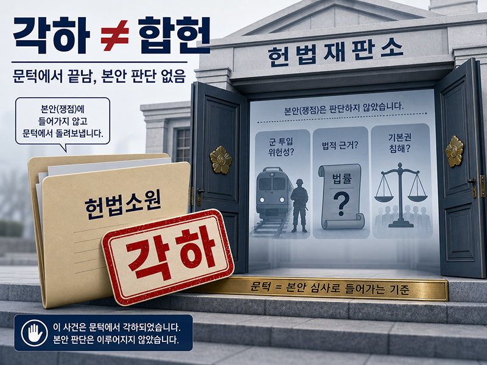
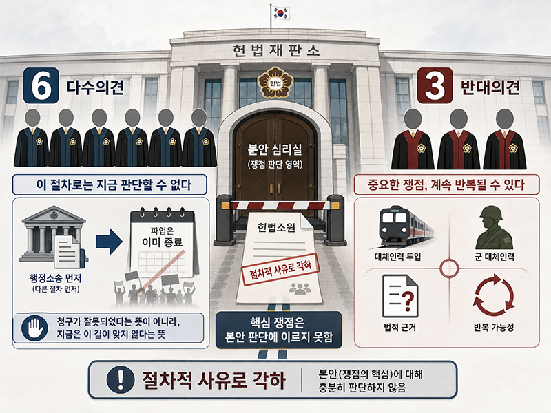
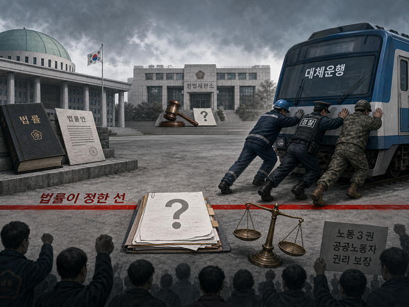

우리 공공기관 노동자들은 파업 이야기가 나오기만 하면 늘 비슷한 말을 듣게 됩니다. 공공기관이 파업을 하면서 국민의 불편을 볼모로 자기 밥그릇만 챙긴다는 말, 국민 세금으로 월급 받는 사람들이 왜 시민 불편을 만들며 말을 안 듣느냐는 말, 공공서비스를 맡은 사람들이면 끝까지 참아야 하는 것 아니냐는 말이 반복됩니다. 공무원에 준하는 청렴과 각종 도덕 규율을 요구받는 조합원들 역시 이런 시선에서 완전히 자유롭지 못합니다. 그래서 파업을 노동자의 권리로 받아들이기보다, 어느 순간부터는 스스로도 부담과 죄책감부터 먼저 느끼게 되는 경우가 적지 않습니다. 그러나 공공서비스를 담당한다는 사실이 노동자라는 본질을 지우지는 않습니다. 우리 역시 임금을 받고 살아가는 노동자이고, 노동조건과 처우, 안전과 삶의 문제를 끝없이 '봉사'라는 말로만 덮어 둘 수는 없습니다.

철도파업을 둘러싼 갈등을 제대로 보려면, 먼저 지금 제도가 철도노동자에게 얼마나 좁은 파업 공간만 허용하고 있는지부터 봐야 합니다. 철도는 필수공익사업으로 분류되고, 그 안에서도 필수유지업무가 넓게 설정되어 있습니다. 열차를 실제로 움직이는 운전업무만이 아니라 관제, 전기, 신호, 통신 등 핵심 기반업무 상당 부분이 파업 중에도 유지되어야 하는 영역으로 묶여 있습니다. 다시 말해 철도노동자는 처음부터 다른 업종보다 훨씬 강한 제한 속에서 파업할 수밖에 없는 구조 안에 놓여 있습니다. 안 그래도 실질적인 파업 효과가 크지 않은데, 언론은 '국민 불편'을 앞세우고, 국가는 대체인력을 준비하고, 여기에 군 투입 논리까지 겹치면 조합원 입장에서는 "도대체 무엇이 파업이고 무엇이 허용된 권리인가"라는 의문이 생길 수밖에 없습니다.

대체인력 양성 문제도 이 맥락에서 보아야 합니다. 2009년 당시 국토해양부, 곧 현 국토교통부는 철도파업 등에 대비해 총 3,000명의 대체기관사를 양성하겠다는 계획을 공개했고, 그중 2,000명은 코레일 내부 간부와 직원에서, 나머지 1,000명은 군 인력, 철도사법경찰, 관계기관 인력 등에서 확보한다고 밝힌 바 있습니다. 여기서 중요한 것은 단순히 대체인력이 있었다는 사실만이 아닙니다. 국가가 철도파업을 오래전부터 비상시 관리해야 할 상황으로 보고, 평상시부터 별도의 비상운행 인력풀을 준비해 왔다는 점입니다. 더구나 그 인력풀 안에 군이 포함된다는 사실은 가볍지 않습니다. 군은 일반적인 대체근무 인력이 아니라 전쟁, 국가안보, 국가적 비상상황과 연결되는 조직입니다. 그런 군이 철도파업 대체인력 체계 안에 들어온다는 것은, 국가가 철도노동자의 쟁의행위를 단순한 노사갈등을 넘어 비상대응의 대상으로도 바라봐 왔다는 인상을 남기기에 충분합니다.

이 지점에서 이번 사안은 단순한 노사갈등을 넘어 민주주의의 기본 구조까지 생각하게 만듭니다. 입법부인 국회는 법을 만들고, 행정부는 그 법을 집행·운영하며, 국가의 최상위 법령인 헌법의 재판을 담당하는 헌법재판소는 그 권력 행사가 헌법의 선을 넘었는지 판단합니다. 그런데 철도파업의 경우, 국회가 만든 법의 틀 안에서 이미 필수유지업무라는 이름으로 파업권이 크게 제한되어 있습니다. 그 위에 행정부가 다시 대체인력 양성과 군 투입까지 얹어 남아 있는 파업 효과를 줄였다면, 이것은 단순한 운행대책을 넘어 "법이 정한 제한 위에 행정이 또 다른 제한을 얹은 것 아니냐"는 질문으로 이어질 수밖에 없습니다. 바로 이런 때에 헌법재판소가 그 행정권 행사가 헌법상 단체행동권을 침해했는지, 법률적 근거 없이 기본권을 제한한 것은 아닌지 본안에서 가려야 했습니다. 그러나 이번 결정에서 헌재는 그 본질적 질문에 끝내 답하지 않았습니다.

이번 헌법재판소 결정은 정확히 읽어야 합니다. 많은 조합원들께서는 "헌재가 각하했다면 그냥 우리가 진 것 아닌가"라고 느끼실 수 있습니다. 그러나 각하는 "당신들 주장이 틀렸다"는 판단과는 다릅니다. 쉽게 말해, 그 주장이 맞는지 틀린지 본격적으로 판단하기 전에 "이 사건은 지금 이 절차로는 받아들이기 어렵다"고 돌려보내는 결정입니다. 헌재는 2026년 4월 29일, 2019년 철도파업 당시 군 병력을 대체인력으로 투입한 정부 조치의 위헌 여부를 다투는 헌법소원을 재판관 6대 3 의견으로 각하했습니다. 보도에 따르면 다수의견은 행정소송을 먼저 거치지 않았다는 점과, 이미 파업이 종료되어 보호이익이 없다는 점을 이유로 들었습니다. 그러나 이것은 군 대체인력 투입이 합헌이라는 뜻이 아닙니다.

헌재 다수의견이 말한 첫 번째 문턱은 "행정소송을 먼저 했어야 한다"는 것이었습니다. 그러나 이 말은 파업 현장의 현실과 맞지 않습니다. 군 대체인력 투입은 파업 국면에서 빠르게 진행되고, 항상 명확한 처분서나 공식 문서 하나로 드러나는 것도 아닙니다. 어느 기관의 어떤 결정을 상대로 취소소송을 내야 하는지, 집행정지를 신청하려면 무엇을 대상으로 삼아야 하는지부터 불분명할 수 있습니다. 법률가의 책상 위에서는 행정소송이라는 길이 있어 보일지 몰라도, 파업 현장의 시간표에서는 그 길이 실제 권리구제로 이어지기 어렵습니다. 두 번째 문턱은 권리보호이익입니다. 헌재 다수의견은 이미 파업이 끝났으니 보호이익이 부족하다고 보았습니다. 그러나 파업은 원래 시간이 지나면 끝납니다. 진행 중에는 행정소송부터 하라 하고, 끝난 뒤에는 이미 끝났다고 한다면, 반복되는 군 대체인력 투입 문제는 언제 본안 판단을 받을 수 있겠습니까.

그래서 이번 결정은 단순한 패배로만 읽을 수 없습니다. 헌재가 군 대체인력 투입을 정당하다고 승인한 것은 아니기 때문입니다. 그러나 동시에 본안 판단을 받지 못했다는 사실은 매우 무겁습니다. 이미 필수유지업무라는 이름으로 넓게 제한된 철도파업 위에 국가가 대체인력 양성과 군 투입까지 얹을 수 있는지, 비공식적이고 빠르게 진행되는 공권력 행사를 행정소송으로 적시에 다투라는 것이 현실적인지, 반복될 수 있는 기본권 침해를 파업이 끝났다는 이유로 계속 판단하지 않아도 되는지라는 질문은 그대로 남았습니다. 그렇다면 우리가 할 일은 단순히 "다음에는 행정소송을 하면 된다"고 받아들이는 것이 아닙니다. 오히려 군 투입이 어떻게 결정되고, 어떤 문서와 지시로 실행되며, 어떤 업무에 누구를 투입하는지를 더 집요하게 기록하고 특정해야 합니다. 그래야 다음번에는 "행정소송으로도 적시에 구제받기 어려운 공권력 행사였다"는 점과 "끝났어도 반복될 수밖에 없는 기본권 문제였다"는 점을 더 분명하게 물을 수 있습니다.